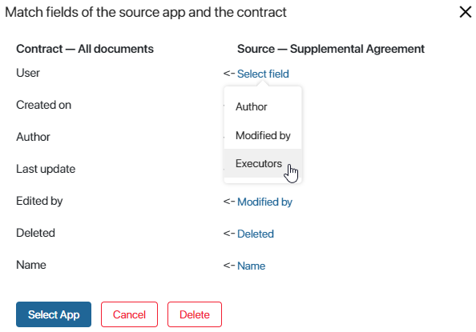

A source is an app whose items will be displayed on a contract’s page. You can add an unlimited number of built-in and custom apps of the Standard, Event, Document types from any workspace to the contract. Using one contract as a source for another is not available.
Before adding a source app, make sure that all contract fields are present in the context of the source. Otherwise, linking the contract and the app will be unsuccessful. For more details, refer to the article Work with contract fields.
Add a source
In the contract source settings, you can:
- Select an app existing in the system as a source.
- Create a new source app in the workspace that stores the contract.
To add a source app, click on the gear icon next to the contract name and choose Source Settings.
Select a source from the existing apps
To add an app from those existing in the system, follow these steps:
- On the source settings page, click Select App.
- In the displayed list of all created apps, select a source.
A window for mapping the context of the contract and the source will appear.
The left column displays a list of fields added to the contract, while the right indicates fields from the source app. System fields added to every app by default are automatically mapped.
- Match the contract fields with the source properties. To do this, click on Select field next to each unspecified property. A dropdown list will show all the fields of the app whose type matches the type of the contract field being mapped.
- If there are no properties in the source app context that match the type with the contract field being mapped, the dropdown list will display a corresponding notification.
Go to the workspace where the source app is located, select it, and adjust the context by adding properties of the necessary types. Then return to the contract settings, select the added source, and match the fields.
- After all the contract and source fields are mapped, save the settings by clicking the Select App button.
Create a source from the contract
To create a new source app, follow these steps:
- In the top right corner of the source settings page, click +New App.
- In the app creation window, specify its name, icon, and select the type: Standard, Event, or Document.
начало внимание
You can create a Document type source app if the contract context has a Files property with the code file. To add the property to the context, go to the contract field settings and create the field.
конец внимание
- Click Create.
The app will be added to the workspace where the contract was created. The context of the created source will contain all the properties from the contract. When adding new fields to the contract, these properties will also appear in the source’s context.
There’s no need to map the contract and source fields. It is done automatically.
List of added sources
Apps linked with the contract will be displayed on the Source Settings page as a list.
If you didn’t link all the fields or incorrectly mapped them to the contract fields when adding a source, such a source in the Selected apps list will be highlighted red.
Click on the source in the list to open the field mapping window and check the settings:
- Map the missing fields and click the Edit Source button.
- To close the source settings window, click Cancel.
- To remove the app from the sources list, click the Delete button. Items from this source will no longer be displayed on the contract page.
After adding the required sources to the contract and mapping the fields, at the bottom of the Source Settings page, click the Save button.
Now, items from the selected source apps will appear on the contract page. When creating items in the source, they will be added to the contract automatically.
You can also create items of source apps from the contract page. To do this, click the plus icon in the top right corner and select the source.
Fill out the source app’s creation form and save the item.
Note that if the source app is deleted in its workspace, it will disappear from the sources list, and its items will be removed from the contract page.
Default app
You can add an unlimited number of source apps to a contract. However, if you are going to use the contract in a business process, you need to specify which app’s settings need to be considered main for the contract. To use the Manage Status and Create App Item activities in the process, select the Default app for the contract. Doing this allows you to specify which app’s statuses need to be used in the process and which app new items will be created in.
If only one source is added to a contract, is becomes the default source automatically.
To specify the default source app, click the gear icon to the right of the contract’s name and select Source Settings. In the Default app field, open the drop-down list and select one source, for example, Business trip reports.
Now you can use the Manage Status and Create App Item activities in business processes and choose the specified source app in their settings. Read more about it in Business processes involving contract items.
Found a typo? Select it and press Ctrl+Enter to send us feedback